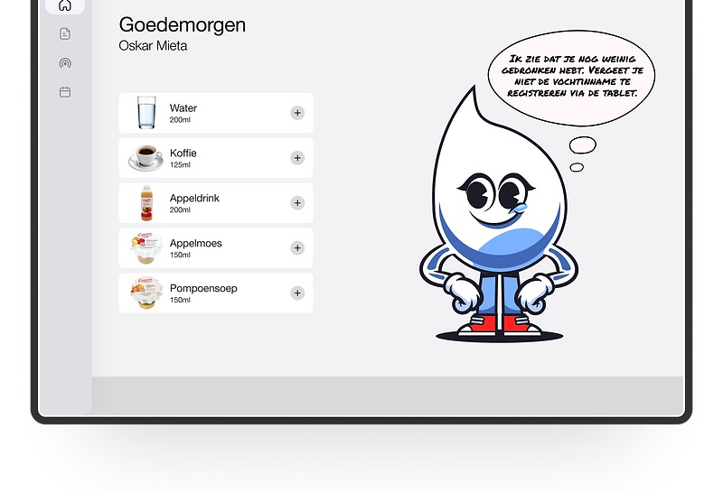
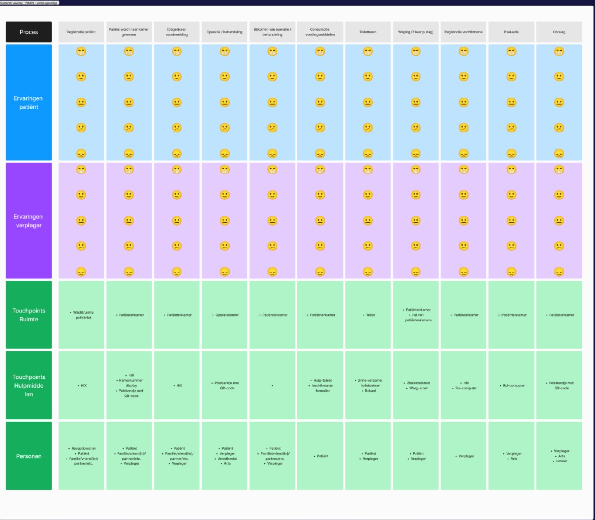

UX Design — 01 Overview
Erasmus MC
A personification/mascot that helps patients manage their fluid balance.
My contribution — team of 4
- Did
- Conducted research with patients and specialists, mapped the customer journey, helped define the problem statement, and ran the usability test.
- Collaborated on
- Shaping the solution direction toward a personification-led approach, with the team.
- Already decided
- The client (Erasmus MC, Cardiology) and the fluid-balance tracking challenge were set as part of the assignment.
- Influenced, didn't design
- Druppie's character and final visuals were designed by teammates, building on the problem framing and direction I helped set.

Design challenge
How can we simplify and potentially automate the process of fluid balance registration for patients and nurses in the Cardiology department?
Research
Patients in the Cardiology department of Erasmus MC are asked to track their fluid intake to monitor their heart condition. However, they face issues such as losing the registration paper, not having a pen available, or forgetting to record their intake — inaccuracies that hurt the reliability of their monitoring.
I ran research across three tracks: patients, to understand their challenges and motivations; specialists, to identify pain points in the current process; and field observations on the ward itself.
To map where things actually went wrong, I built a customer journey covering the full ward stay — registration, room transfer, daily prep, treatment, recovery, meals, toileting, and twice-daily weighing — layered with patient and nurse experience at each step.

Insights
- Paper-based tracking failed for mundane, physical reasons — a missing pen, a lost form — not because patients didn't understand why it mattered.
- We researched existing fluid-tracking technology — voice-controlled measuring cups, connected scales, monitoring apps — but found the implementation and maintenance costs too high for the cardiology ward to adopt.
- That ruled out a hardware-led fix and pointed toward a lower-cost, motivation-first solution instead.
Ideation
Based on that research, my team and I landed on personification as the direction: a character that explains to patients why tracking their fluid balance matters, while motivating them to take ownership of the process — fostering trust in the monitoring system rather than treating it as one more clinical chore.
The team then designed Druppie around education, positive affirmations, and nudges — aimed at promoting healthy behavioral change without feeling clinical.
Final design
The final concept centers on a progress overview — a visual graph showing daily intake with motivational messages from Druppie, shown at the top of this page.
Testing
I organized and ran the usability test myself, with three people who had real experience with fluid-balance tracking through heart conditions — one recently discharged after a cardiac admission, two living with a pacemaker. That test shaped the final character and interaction, and confirmed the "Wist-je-datjes" (did-you-know) prompts were landing as intended: informative rather than preachy.
Outcome
Druppie, the progress overview, and the "Wist-je-datjes" prompts were delivered as the final concept for Erasmus MC's Cardiology department, validated through usability testing with three patients with real cardiac experience. This was a four-person course project; I don't have post-handover deployment metrics to report here.
Reflection
My contribution here sat upstream of the final visuals — research, journey mapping, and problem framing, not the character work itself. Seeing how directly that framing shaped Druppie's tone — educational, not clinical — was a good reminder of how much of a design decision gets made before anyone opens a design tool.